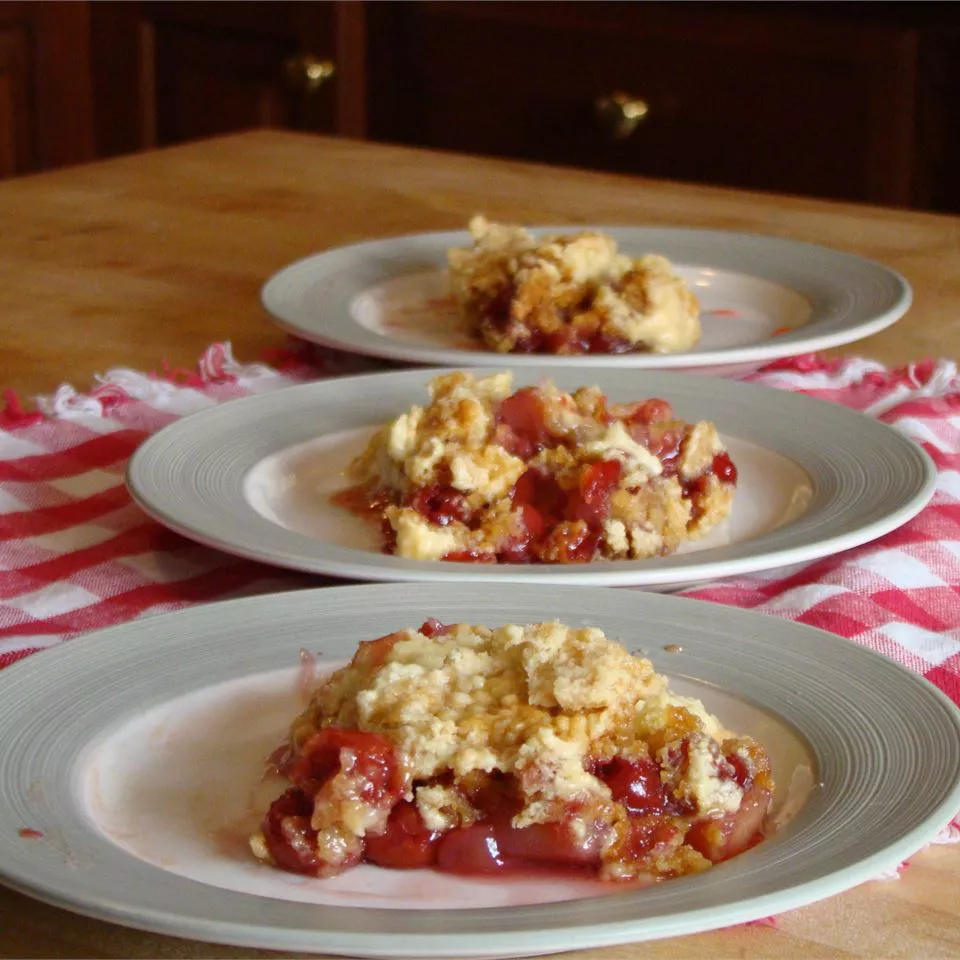

Carrot Cake

Description
This carrot cake is my favorite recipe, and I have tried many carrot cakes! If you don't like pecans, feel free
to leave them out.
Ingredients
- Sugars: You'll need white sugar for the cake and confectioners' sugar for the frosting.
- Oil: A neutral oil, such as vegetable oil, adds moisture without imparting flavor.
- Eggs: Four whole eggs lend moisture and help bind the carrot cake batter together.
- Vanilla: Two teaspoons of vanilla extract for the cake (and one teaspoon for the frosting)
enhances the flavor.
- Flour: All-purpose flour creates structure and brings the batter together.
- Leaveners: Baking soda and baking powder act as leaveners, which means they help the cake
rise.
- Cinnamon: Ground cinnamon adds that warm, cozy flavor you associate with carrot cake.
- Salt: Salt enhances the flavors of the other ingredients, but it won't make the cake taste
salty.
- Carrots: Of course, you'll need grated carrots!
- Pecans: Chopped pecans give the cake and frosting a pleasant crunch.
- Butter and cream cheese: Butter and cream cheese are the key ingredients in the light and
fluffy cream cheese frosting.
Steps
- Make the batter: Beat the wet ingredients together, then mix in the dry ingredients. Stir
in the carrots and fold in the pecans.
- Bake the cake: Pour the batter into the prepared cake pan or pans. Bake in the preheated
oven until a toothpick comes out clean.
- Frost the cake: Beat the frosting ingredients together until smooth and creamy. Stir in the
pecans. Frost
the (completely cooled) cake.